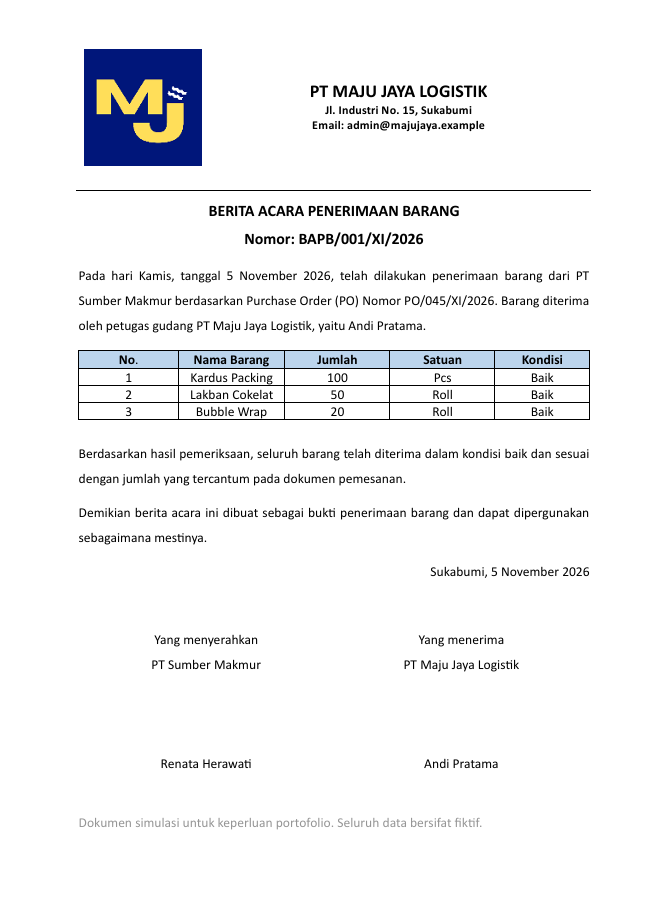

Administrasi Stok Gudang
Proyek ini merupakan simulasi untuk pabrik pangan menggunakan data fiktif. Isinya mencatat barang masuk dan keluar, menghitung sisa stok otomatis, serta memberi peringatan stok menipis dan barang hampir kedaluwarsa.


Lulusan D3 Manajemen Informatika. Mencari posisi Admin dan IT
Formulir online yang terhubung ke Google Sheets. Data pendaftar masuk otomatis, dan rekap per kelas, program, dan status terhitung sendiri. Seluruh data bersifat fiktif
Proyek ini merupakan simulasi untuk pabrik pangan menggunakan data fiktif. Isinya mencatat barang masuk dan keluar, menghitung sisa stok otomatis, serta memberi peringatan stok menipis dan barang hampir kedaluwarsa.
Simulasi dokumen berita acara sebagai bukti penerimaan barang dari supplier ke gudang, lengkap dengan tabel barang dan kolom tanda tangan kedua pihak. Seluruh data bersifat fiktif.
